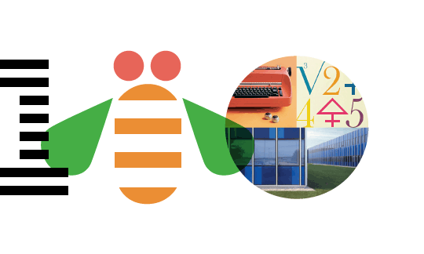
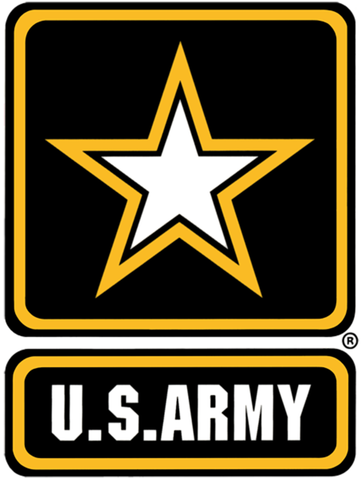
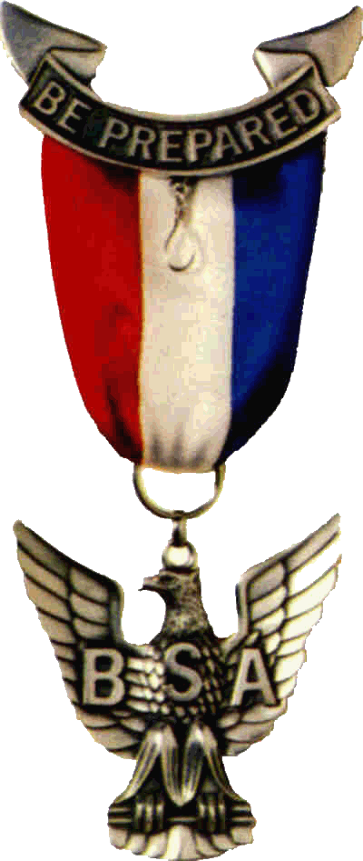

A bit about me:
By day I work at IBM as a software engineer and attend school at East Carolina University.
I live in Greenville NC but spent the last several years living in Raleigh NC.
When I am not writing code and learning magic (aka science) I spend my time playing
video games and studying martial arts.
Current Mission:
Right now I am a Senior at ECU working towards finishing getting my BS in Mathematics
and Computer Science. In addition while attending school I am working part time with
IBM as well as spending my free time working on personal coding projects.
I am also an officer in the ACM and ECU martial arts club. I don’t know
where exactly life will lead me after I finish school but I want to make
sure that I am prepared for any outcome.
Vision:
My hope is that one day I can accumulate enough knowledge and experience
to make a difference in the world. I want to use the technology of tomorrow
to solve the problems of today. I have a lot of interest in data analysis
and machine learning so maybe with time I can extend a career in that
direction but right now my life still has plenty of opportunities so
we will see what happens.
Sorry my about me page is currently under reconstruction
This section is dedicated to my employment history and information regarding the positions I have held.
Here are three of the positions that I take exception pride in.
To learn more you can follow the links below to view my full work history or to one page CV.

IBM
I am currently employed with IBM, here I work with WAS (Websphere Application Servers) as a support technician.
I have had the pleasure of working with the WASADM team where our primary objective is debugging and repairing
errors with WAS installation, node/cluster management, other administrative application functions. As a second
duty I also build and maintain a database holding about 14,000 records.

Army
From 2011 to 2017 I served with the United States Armed Forces in the Army National Guard.
My acting role as a Solider was a Computer and Detection Systems Technician (MOS: 94F), my job
consisted of maintaining sensitive electrical equipment and their various components. This
included equipment such as night vision goggles, radios, chemical detectors, radiation detectors,
and other computer based systems.
Boy Scouts
For two years I worked with the Boy Scouts of America as an Instructor, and Councilor.
My duties during this time were to instruct young scouts in practical skills to be used
in the real world this primary included First Aid, Emergency Preparedness, Civic Duties,
and Communications. Along with teaching I was responsible for maintaining camp grounds
and protecting the environment within the standards of Leave No Trace.
Click here to go ahead and download a copy of my latest CV directly.
Download CV
Projects and Awards
Below are some of the projects and recognitions.
You can click the button bellow if you would like to learn more
about my personal projects and awards.
Projects
Many of the projects that I work on are for learning purposes, I find the that best way to
learn a technology is to learn through doing.
Here you can find some various projects that I have worked on in the past or
at this point currently at work on. One example is this website which I built as a
test to learn html, css, and js.

Eagle Scout Award
The Eagle Scout award is the highest accomplishment one can attain in scouting.
For me this reward exemplifies my devotion to the Scout oath and even more so to the dedication that I have for my community.
To always be prepared both mentally and physically, and to always do my kind to those who I meet in life.